Meta Campaign Strategy
Safely Anchored Small School · Prepared by Elzanne Amao · September 2026
Goal: Parent sees Meta ad → visits landing page → completes lead form → school books a visit → trial day → enrolment.
Primary: Enrolments for January 2027
Secondary: Late enrolments for the remainder of 2026
Landing page: safelyanchored.co.za/enrol-2027
1. Ad Formats
Static images
A single image with or without text overlay. Simplest to produce. A strong photo of children in a real classroom or playground moment works harder than a designed graphic.
Video
Short video filmed at the school. The strongest format for giving parents a sense of what the school feels like, and Meta's algorithm tends to favour video. A 15–30 second clip filmed on a phone is more authentic than a scripted production. 15–30 seconds. The first 3 seconds must establish what the viewer is looking at.
Motion graphics
A static image with simple movement — text appearing line by line, a gentle zoom, a swipe between images. Canva can produce these. 6–15 seconds.
Sizing
Paid ads
- 4:5 (1080 × 1350px) for feed placements
- 9:16 (1080 × 1920px) for Stories and Reels
- If you only have time for one ratio, go 1:1 (1080 × 1080px) as it works across 80% of placements
Organic posts
- 4:5 (1080 × 1350px) for feed
- 9:16 (1080 × 1920px) for Stories and Reels
2. Competitive Positioning
The schools advertising in this area fall into two patterns. Larger schools lead with institutional credentials (matric pass rates, campus facilities, accreditation logos). Smaller schools lead with philosophy (play-based learning, curiosity, values). Both approaches are generic enough that you could swap the school name and the copy would still work.
You can see what other schools are running by searching the Meta Ad Library. Select "South Africa" and search by school name.
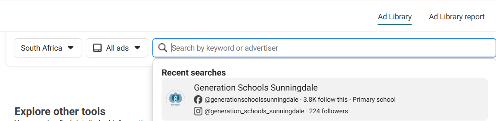
What the neighbours are running
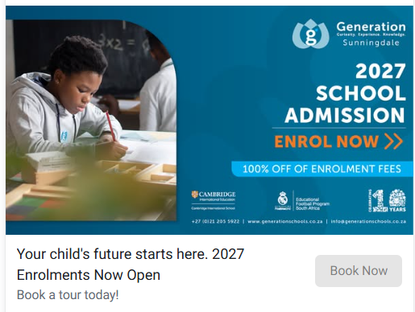
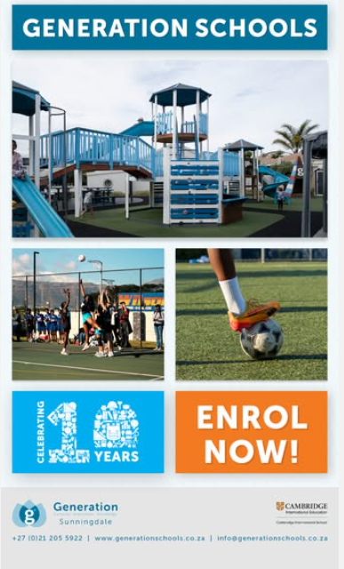
Generation Schools Sunningdale — generic headlines ("Your child's future starts here"), facilities-focused creative, and "100% off enrolment fees" which undercuts premium positioning.
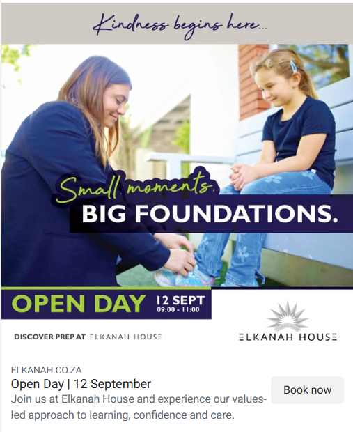
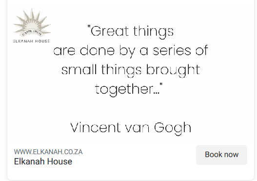
Elkanah House — the Open Day ad is strong (real photo, clear event details). The Van Gogh quote post is filler content being boosted.
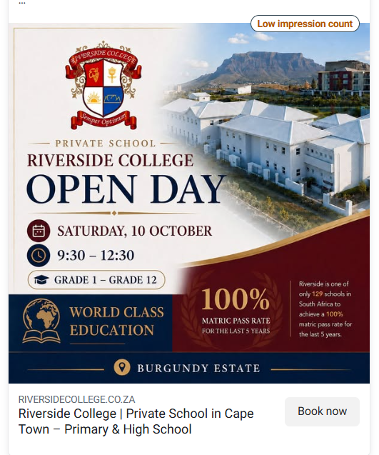
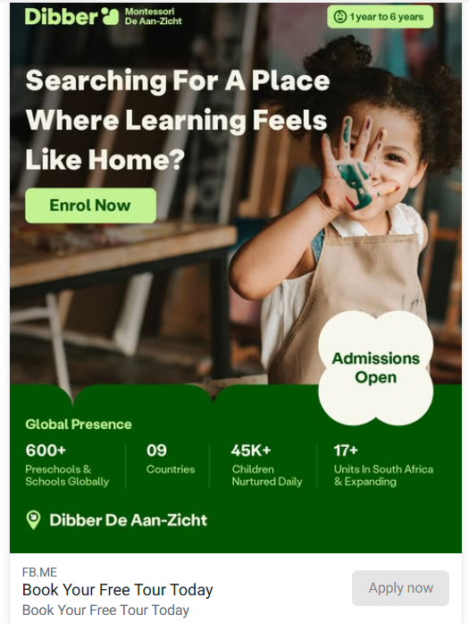
Riverside College — text-heavy, hashtag-stuffed, leads with credentials. Meta's "Low impression count" tag says it all.
Dibber — interesting philosophical copy, but generic enough to apply to any Montessori-style school.
Safely Anchored's advantage
Safely Anchored's story is specific and hard to copy. The school grew out of a family's transport and aftercare business already known across Sunningdale, Parklands, and Table View. Max 20 per class means the individual attention claim is credible. And the conversion rate from enquiry to enrolment is near-total, so the ads just need to get a parent through the door.
None of the competitors are using parent testimonials. Ads 2 and 6 give Safely Anchored something the neighbours don't have.
3. Campaign Structure
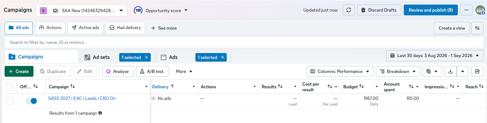
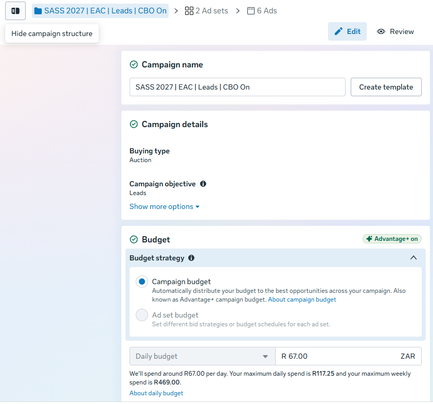
Open campaign in Ads Manager →| Setting | Value |
|---|---|
| Campaign name | SASS 2027 | EAC | Leads | CBO On |
| Objective | Leads |
| Budget optimisation (CBO) | On — Campaign budget, R67.00 daily |
| Special ad categories | None |
4. Ad Sets
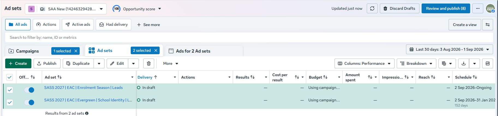
Open ad sets in Ads Manager →Ad Set 1 — Evergreen
Runs from September 2026, ongoing. Messaging is about the school's identity. No dates or enrolment deadlines.
| Setting | Value |
|---|---|
| Ad set name | SASS 2027 | EAC | Evergreen | School Identity | Leads |
| Schedule | 2 Sep 2026 – Ongoing |
| Saved audience | Safely Anchored Small School Leads |
| Locations (Controls) | Parklands Western Cape, Bloubergstrand Western Cape, Sunningdale Western Cape |
| Minimum age (Controls) | 25 |
| Languages (Controls) | English (US), English (UK), Afrikaans |
| Age (Advantage+ suggestions) | 25–50 |
| Detailed targeting (Advantage+ suggestions) | Parents with pre-schoolers (3–5), Parents with primary school-age children (6–8), Parents with pre-teens (9–12) |
| Placements | Advantage+ placements, Audience Network excluded |
| Conversion location | Website |
| Performance goal | Maximise number of leads |
| Estimated audience size | 39,600 – 46,600 |
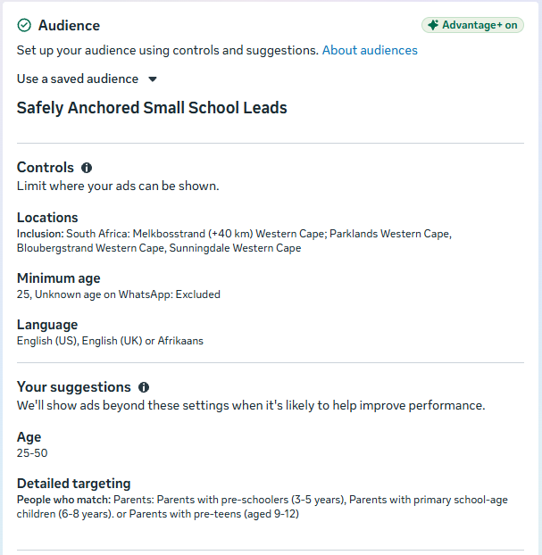
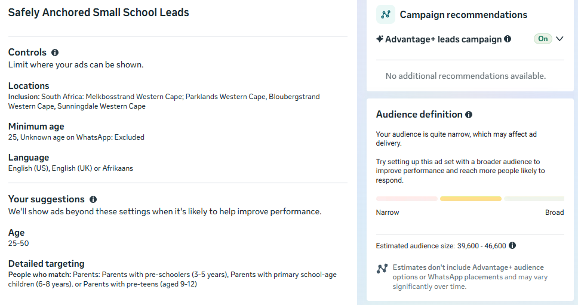
Ad Set 2 — Enrolment Season
Activates October 2026, runs through January 2027. Time-sensitive messaging about January 2027 enrolment.
| Setting | Value |
|---|---|
| Ad set name | SASS 2027 | EAC | Enrolment Season | Leads |
| Schedule | 2 Sep 2026 – 31 Jan 2027 (152 days) |
| Audience | Same as Ad Set 1 |
| Conversion location | Website |
| Performance goal | Maximise number of leads |
Both ad sets share the same audience. A parent may see an evergreen ad about small class sizes and then an enrolment season ad about January 2027 places a few days later.
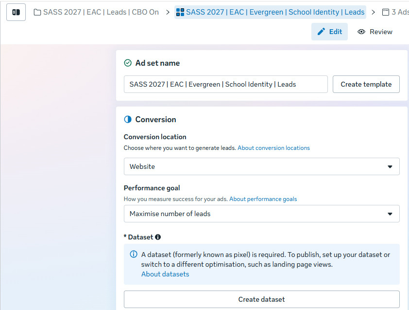
5. Ads
How UTM tracking works
Each ad links to the landing page with UTM parameters in the URL. These tags let Google Analytics record where each visitor came from and which ad they clicked.
| Parameter | What it tracks | Value |
|---|---|---|
utm_source | Platform | facebook (for both Facebook and Instagram) |
utm_medium | Traffic type | paid |
utm_campaign | Campaign name | enrolment_2027 |
utm_content | Ad variant | Different per ad (see each ad below) |
Where these go in Ads Manager
Each ad has three URL-related fields. Here's where each piece goes:
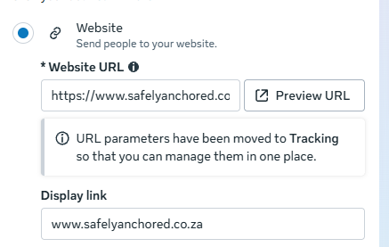
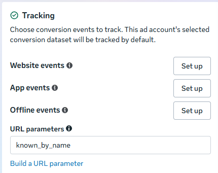
utm_content value — change this for each ad so you can tell which one drove a lead.
Ad Set 1 — Evergreen Ads
Primary text (caption)
Ads Manager URLs
Primary text (caption)
Ads Manager URLs
Primary text (caption)
Ads Manager URLs
Ad Set 2 — Enrolment Season Ads
Primary text (caption)
Ads Manager URLs
Primary text (caption)
Ads Manager URLs
Primary text (caption)
Ads Manager URLs
6. Budget
| Month | Monthly | Daily | Evergreen | Enrolment Season | Notes |
|---|---|---|---|---|---|
| September | R2,000 | R67/day | Active (3 ads) | Paused | Campaign goes live. Learning phase: no changes for 7–10 days. |
| October | R3,000 | R97/day | Active | Activated (3 ads) | Peak period after WCED placement outcomes. |
| November | R2,000 | R67/day | Active | Active | Maintain visibility. |
| December | R2,000 | R65/day | Active | Active | Holiday period. Late deciders still active. |
| January | R3,000 | R97/day | Active | Active → paused end of Jan | Final push before Term 1. |
| Total | R12,000 |
The learning phase
When the campaign launches, Meta needs roughly 50 lead events to learn which people are most likely to submit the form. This takes about 7–10 days. Cost per lead will be higher during this period. Do not change targeting, budget, or creative during this window — each change resets the learning phase.
At R2,000 for September and an estimated cost per lead of R30–R80, expect between 25 and 65 form submissions in the first month.
Monthly review
| # | Metric | Where to find it |
|---|---|---|
| 1 | How many leads came in? | Google Sheet (form submissions) |
| 2 | Cost per lead? | Meta Ads Manager |
| 3 | Which ads generated the most leads? | Meta Ads Manager |
| 4 | Which ads have the lowest cost per lead? | Meta Ads Manager |
| 5 | How many leads booked a visit? | School's own records |
| 6 | How many visited and enrolled? | School's own records |
If an ad is consistently underperforming (high spend, few leads), pause it and let Meta direct spend to the remaining ads.
Frequency monitoring
Frequency is the average number of times each person has seen your ad. A frequency of 2–3 per week is healthy for this campaign. If it climbs above 4–5, parents are seeing the same ad too often and cost per lead will start rising.
How to check: In Ads Manager, go to "Columns: Performance" → "Customise Columns" → search for "Frequency" and add it to your reporting view.
What to do if frequency gets too high: swap in a new photo or video on the ad that's been running longest, or broaden the audience slightly (add Table View as a location, or widen the age range). Either move gives Meta fresh room to work with.
7. Timeline
| When | What |
|---|---|
| Before launch | School provides photos and video clips. Elzanne builds creative and uploads to Ads Manager. |
| September 1–7 | Campaign goes live with Evergreen ad set (3 ads). Learning phase. No changes. |
| September 8–30 | Monitor performance. First leads arrive. School follows up from Google Sheet. |
| Early October | Activate Enrolment Season ad set (3 ads). Update daily budget to R97. |
| October–November | Review monthly. Pause underperformers. |
| December | Maintain at R65/day. Campaign stays live for late deciders. |
| January | Final push at R97/day. Pause Enrolment Season ad set end of January. |
| Post-January | Decide whether to continue Evergreen at a lower budget for 2028, or pause. |
8. Practical Tips for Managing Ads Manager
Draft, Active, and Paused
Ads in Ads Manager have three states. Draft means the ad hasn't been published yet — it's saved but not running. Active means it's live and spending budget. Paused means it's stopped but all its settings and learning data are preserved. You can unpause an ad at any time and it picks up where it left off.
If an ad isn't working, pause it rather than deleting it. Deleting is permanent and loses the ad's history. Pausing keeps everything intact in case you want to revisit it later.
Changing the budget
When changing the daily budget (for example from R67 to R97 in October), make the change at the start of the month. Avoid increases of more than 20% at a time — a large jump can reset the learning phase. If you need to go from R67 to R97, that's a 45% increase, so you could step it up to R80 for a few days first and then to R97.
Don't boost posts from the Facebook page
After this training, it might be tempting to hit the "Boost Post" button on the school's Facebook or Instagram page. This creates a separate campaign in Meta's simplified interface with weaker targeting and optimisation than what's set up in Ads Manager. All paid advertising should go through Ads Manager to keep the leads objective and audience targeting intact.
Ad rejections
Meta sometimes rejects ads for policy reasons that aren't obvious — an image with too much text overlay, or a word in the copy that triggers a flag. If an ad gets rejected, Ads Manager will show a notification with the reason and an option to request a manual review. This is common and usually resolved within a day or two. Don't rework the ad before requesting a review first.
Spending alerts
You can set up email notifications for when spending crosses a threshold or when an ad is approved/rejected. Go to Ads Manager → Account Settings → Notifications to configure these. This means you don't have to log in to Ads Manager every day to check whether things are running.
What the columns in Ads Manager mean
The default reporting view shows a lot of numbers. The ones that matter for this campaign are:
| Column | What it means |
|---|---|
| Results | The number of leads (form submissions) the ad generated |
| Cost per result | How much each lead cost (total spend ÷ number of leads) |
| Amount spent | Total spend on that ad, ad set, or campaign |
| Impressions | How many times the ad was shown (one person can see it multiple times) |
| Reach | How many unique people saw the ad |
| Frequency | Average times each person saw the ad (Impressions ÷ Reach). Add this column manually — see Section 6. |
| CTR (link click-through rate) | Percentage of people who clicked the ad link. Useful but secondary — leads matter more than clicks. |
9. Notes
Grade filtering: Meta's parental targeting brackets (3–5, 6–8, 9–12 years) don't map precisely to school grades. The ad copy names specific grades so parents self-select.
Afrikaans: Initial launch is English only. Afrikaans versions should be added as additional ads inside the existing ad sets, not as separate ad sets.
Landing page URL: All ads point to safelyanchored.co.za/enrol-2027. If the URL changes, update it in each ad's Website URL field and keep the UTM parameters the same.
POPIA: The landing page form includes a consent checkbox. A broader privacy notice for marketing leads is worth putting in place.
Meta Pixel (Dataset): Not yet installed. Shireen needs to create the pixel ("SASS Website Pixel") from her admin account. Without it, the ads cannot be published when optimising for website leads. This is on the agenda for the Friday meeting.
10. External Training Material
These video tutorials cover the fundamentals of setting up and running Meta ads. Watch them in order for a solid grounding, or dip in as reference when working through a specific step in Ads Manager.